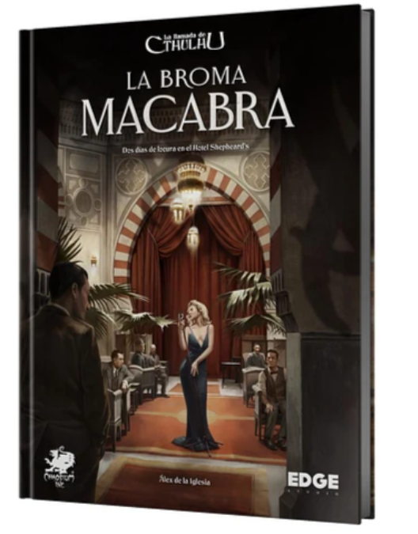

La Broma Macabrar
Álex de la Iglesia (director, guionista y productor cinematográfico, además de veterano rolero) nos da su versión personal de La llamada de Cthulhu en los locos años 20 con esta aventura en la que los investigadores dispondrán de dos días para detener los fenómenos inexplicables que acosan el hotel más lujoso de El Cairo..
Precio: $39.990
Descuento: Sí

Monasterium
A principios de la Edad Media, en pleno apogeo del poder eclesiástico, se construyeron al menos cinco monasterios en un hermoso valle, designados para difundir la Palabra de Dios. Como decano de una de las principales escuelas catedralicias del país, intentarás acomodar a los novicios que te han confiado en los puestos de mayor relevancia de cada monasterio para que tu escuela gane en prestigio e influencia. .
Precio: $59.990
Descuento: Sí